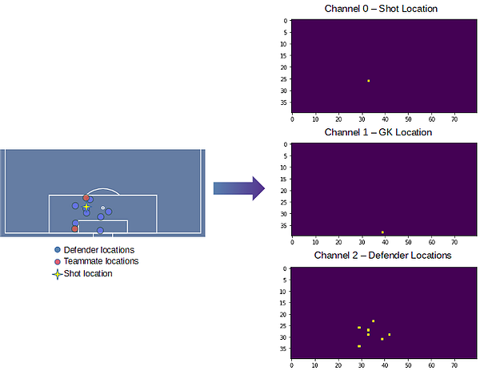
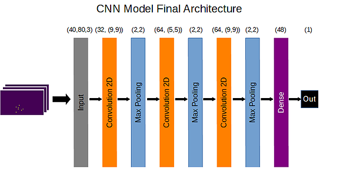

What is this site?
xG Board is meant as an interactive demo for the CNN-based xG model ("xG with CNNs") by Charles William. In this demo site, you can move the goalkeeper, the defenders, and the shot location around to get the predicted xG values for those scenarios.
Tell me more about the model!
A full write-up about the model (and the code!) can be found in the link above(☝). The most important parts are the model architecture and the inputs. The features it takes into account are:

The model itself is a Convolutional Neural Network trained on the Statsbomb freeze frames dataset. It has 3 [Convolution + Max-pooling] layers, followed by a fully connected layer to predict the probability of the shot
resulting in a goal (AKA, the xG value).
